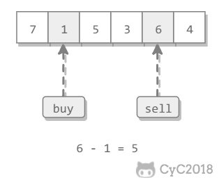
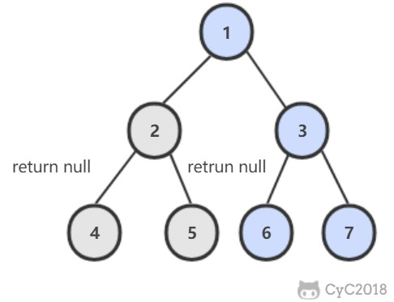

60. n 个骰子的点数 Lintcode
题目描述 把 n 个骰子扔在地上，求点数和为 s 的概率。
解题思路 动态规划 使用一个二维数组 dp 存储点数出现的次数，其中 dp[i][j] 表示前 i 个骰子产生点数 j 的次数。
空间复杂度：O(N2 )
1 2 3 4 5 6 7 8 9 10 11 12 13 14 15 16 17 18 19 20 public List<Map.Entry<Integer, Double>> dicesSum(int n) { final int face = 6 ; final int pointNum = face * n; long [][] dp = new long [n + 1 ][pointNum + 1 ]; for (int i = 1 ; i <= face; i++) dp[1 ][i] = 1 ; for (int i = 2 ; i <= n; i++) for (int j = i; j <= pointNum; j++) for (int k = 1 ; k <= face && k <= j; k++) dp[i][j] += dp[i - 1 ][j - k]; final double totalNum = Math.pow(6 , n); List<Map.Entry<Integer, Double>> ret = new ArrayList<>(); for (int i = n; i <= pointNum; i++) ret.add(new AbstractMap.SimpleEntry<>(i, dp[n][i] / totalNum)); return ret; }
动态规划 + 旋转数组 空间复杂度：O(N)
1 2 3 4 5 6 7 8 9 10 11 12 13 14 15 16 17 18 19 20 21 22 23 24 25 public List<Map.Entry<Integer, Double>> dicesSum(int n) { final int face = 6 ; final int pointNum = face * n; long [][] dp = new long [2 ][pointNum + 1 ]; for (int i = 1 ; i <= face; i++) dp[0 ][i] = 1 ; int flag = 1 ; for (int i = 2 ; i <= n; i++, flag = 1 - flag) { for (int j = 0 ; j <= pointNum; j++) dp[flag][j] = 0 ; for (int j = i; j <= pointNum; j++) for (int k = 1 ; k <= face && k <= j; k++) dp[flag][j] += dp[1 - flag][j - k]; } final double totalNum = Math.pow(6 , n); List<Map.Entry<Integer, Double>> ret = new ArrayList<>(); for (int i = n; i <= pointNum; i++) ret.add(new AbstractMap.SimpleEntry<>(i, dp[1 - flag][i] / totalNum)); return ret; }
61. 扑克牌顺子 NowCoder
题目描述 五张牌，其中大小鬼为癞子，牌面为 0。判断这五张牌是否能组成顺子。
解题思路 1 2 3 4 5 6 7 8 9 10 11 12 13 14 15 16 17 18 19 20 21 22 public boolean isContinuous (int [] nums) if (nums.length < 5 ) return false ; Arrays.sort(nums); int cnt = 0 ; for (int num : nums) if (num == 0 ) cnt++; for (int i = cnt; i < nums.length - 1 ; i++) { if (nums[i + 1 ] == nums[i]) return false ; cnt -= nums[i + 1 ] - nums[i] - 1 ; } return cnt >= 0 ; }
62. 圆圈中最后剩下的数 NowCoder
题目描述 让小朋友们围成一个大圈。然后，随机指定一个数 m，让编号为 0 的小朋友开始报数。每次喊到 m-1 的那个小朋友要出列唱首歌，然后可以在礼品箱中任意的挑选礼物，并且不再回到圈中，从他的下一个小朋友开始，继续 0...m-1 报数 .... 这样下去 .... 直到剩下最后一个小朋友，可以不用表演。
解题思路 约瑟夫环，圆圈长度为 n 的解可以看成长度为 n-1 的解再加上报数的长度 m。因为是圆圈，所以最后需要对 n 取余。
1 2 3 4 5 6 7 public int LastRemaining_Solution (int n, int m) if (n == 0 ) return -1 ; if (n == 1 ) return 0 ; return (LastRemaining_Solution(n - 1 , m) + m) % n; }
63. 股票的最大利润 Leetcode
题目描述 可以有一次买入和一次卖出，买入必须在前。求最大收益。

解题思路 使用贪心策略，假设第 i 轮进行卖出操作，买入操作价格应该在 i 之前并且价格最低。
1 2 3 4 5 6 7 8 9 10 11 public int maxProfit (int [] prices) if (prices == null || prices.length == 0 ) return 0 ; int soFarMin = prices[0 ]; int maxProfit = 0 ; for (int i = 1 ; i < prices.length; i++) { soFarMin = Math.min(soFarMin, prices[i]); maxProfit = Math.max(maxProfit, prices[i] - soFarMin); } return maxProfit; }
64. 求 1+2+3+...+n NowCoder
题目描述 要求不能使用乘除法、for、while、if、else、switch、case 等关键字及条件判断语句 A ? B : C。
解题思路 使用递归解法最重要的是指定返回条件，但是本题无法直接使用 if 语句来指定返回条件。
条件与 && 具有短路原则，即在第一个条件语句为 false 的情况下不会去执行第二个条件语句。利用这一特性，将递归的返回条件取非然后作为 && 的第一个条件语句，递归的主体转换为第二个条件语句，那么当递归的返回条件为 true 的情况下就不会执行递归的主体部分，递归返回。
本题的递归返回条件为 n <= 0，取非后就是 n > 0；递归的主体部分为 sum += Sum_Solution(n - 1)，转换为条件语句后就是 (sum += Sum_Solution(n - 1)) > 0。
1 2 3 4 5 public int Sum_Solution (int n) int sum = n; boolean b = (n > 0 ) && ((sum += Sum_Solution(n - 1 )) > 0 ); return sum; }
65. 不用加减乘除做加法 NowCoder
题目描述 写一个函数，求两个整数之和，要求不得使用 +、-、*、/ 四则运算符号。
解题思路 a ^ b 表示没有考虑进位的情况下两数的和，(a & b) << 1 就是进位。
递归会终止的原因是 (a & b) << 1 最右边会多一个 0，那么继续递归，进位最右边的 0 会慢慢增多，最后进位会变为 0，递归终止。
1 2 3 public int Add (int a, int b) return b == 0 ? a : Add(a ^ b, (a & b) << 1 ); }
66. 构建乘积数组 NowCoder
题目描述 给定一个数组 A[0, 1,..., n-1]，请构建一个数组 B[0, 1,..., n-1]，其中 B 中的元素 B[i]=A[0]*A[1]*...*A[i-1]*A[i+1]*...*A[n-1]。要求不能使用除法。
解题思路 1 2 3 4 5 6 7 8 9 public int [] multiply(int [] A) { int n = A.length; int [] B = new int [n]; for (int i = 0 , product = 1 ; i < n; product *= A[i], i++) B[i] = product; for (int i = n - 1 , product = 1 ; i >= 0 ; product *= A[i], i--) B[i] *= product; return B; }
67. 把字符串转换成整数 NowCoder
题目描述 将一个字符串转换成一个整数，字符串不是一个合法的数值则返回 0，要求不能使用字符串转换整数的库函数。
1 2 3 4 5 6 7 Iuput: +2147483647 1a33 Output: 2147483647 0
解题思路 1 2 3 4 5 6 7 8 9 10 11 12 13 14 15 public int StrToInt (String str) if (str == null || str.length() == 0 ) return 0 ; boolean isNegative = str.charAt(0 ) == '-' ; int ret = 0 ; for (int i = 0 ; i < str.length(); i++) { char c = str.charAt(i); if (i == 0 && (c == '+' || c == '-' )) continue ; if (c < '0' || c > '9' ) return 0 ; ret = ret * 10 + (c - '0' ); } return isNegative ? -ret : ret; }
68. 树中两个节点的最低公共祖先 解题思路 二叉查找树 Leetcode : 235. Lowest Common Ancestor of a Binary Search Tree
二叉查找树中，两个节点 p, q 的公共祖先 root 满足 root.val >= p.val && root.val <= q.val。
1 2 3 4 5 6 7 8 9 public TreeNode lowestCommonAncestor (TreeNode root, TreeNode p, TreeNode q) if (root == null ) return root; if (root.val > p.val && root.val > q.val) return lowestCommonAncestor(root.left, p, q); if (root.val < p.val && root.val < q.val) return lowestCommonAncestor(root.right, p, q); return root; }
普通二叉树 Leetcode : 236. Lowest Common Ancestor of a Binary Tree
在左右子树中查找是否存在 p 或者 q，如果 p 和 q 分别在两个子树中，那么就说明根节点就是最低公共祖先。

1 2 3 4 5 6 7 public TreeNode lowestCommonAncestor (TreeNode root, TreeNode p, TreeNode q) if (root == null || root == p || root == q) return root; TreeNode left = lowestCommonAncestor(root.left, p, q); TreeNode right = lowestCommonAncestor(root.right, p, q); return left == null ? right : right == null ? left : root; }